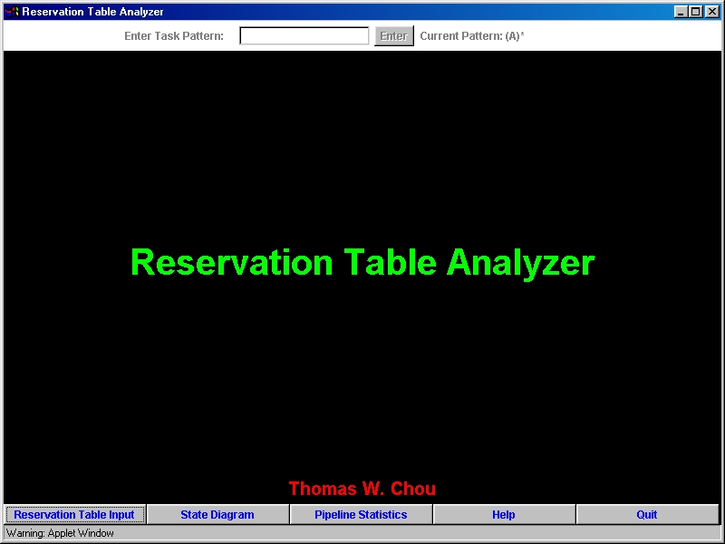
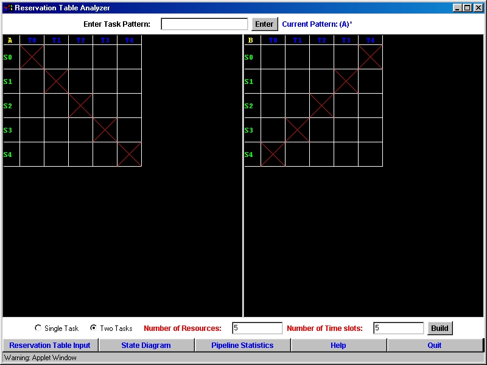

Introduction:
The Reservation Table Analyzer was written for the Java 1.1.x platform
without the use of Java Swing Sets. It was designed to run under any machine
that supports Java 1.1. This document is intended for future developers
of this application who want to know how the application was designed and
implemented. In the first part, I will explain the GUI design, and in the
last part of this document I will explain the different algorithms that
were used in the application.
1. Component Layout:

The figure above is a screenshot of the application when it first loads up. The entire window you see is actually a Java Frame object. Within the Frame there are three components, North Panel, South Panel, and Main Panel. North panel contains components related to the Task Pattern. The South Panel contains the 5 buttons in a row that you see the figure above. And finally, the Main Panel is the large area at the center of the application. This is where the reservation table, state diagram, help screen, and pipeline statistics are displayed. The Java BorderLayout manager is used when adding the three components to the Frame. For both the North Panel and South Panel the default layout manager, FlowLayout, is used. Main Panel uses the Java CardLayout manager. Using the CardLayout system will allow the Main Panel to switch from one panel display to another easily. For example, if the Main Panel is currently showing the reservation tables and the user presses the State Diagram button, the layout manager will immediately hide the reservation tables panel and bring up the state diagram panel to the top of the deck of panels.
2. Reservation Tables:

When the user clicks on the Reservation Table Input button the above
windowl will show up. Initially, there won't be any reservation tables
displayed. Only when the user enters the number of resources and time slots
available and then presses the Build button will then the reservation table
be created and displayed. The user will then be able to fill in the reservation
table(s) by clicking on the individual boxes. How this functionality is
implemented is described below:
When the user clicks the Build button with the number of resources
and time slots filled in the application will calculate how large of a
drawing space it will need for the reservation table(s). This calculation
is possible because the size of each box is constant. Multiplying the height
of the box with the number of resources will give an approxmiate height
for the panel, and multiplying the width of the box with the number of
time slots will give an approxmiate width for the panel. Once the reservation
table(s) are created the reservation table panels will then listen for
any mouse events. If a mouse click occurs within one of the reservation
tables then the application will attempt to calculate which box did the
mouse click occur in. Once it has determined the box it will mark it with
an X if the box is empty. If the box has an X already then the X will be
removed.
3. TextPanel Class:
The TextPanel Class was designed to mimick the functionality of the
TextArea Class provided by the standard Java Class Libraries. The TextPanel
Class however has a very important feature that makes it more versatile
then the TextArea Class. It allows words in the panel to have different
colors where in a TextArea component all words and symbols within the component
must be of the same color. A TextPanel object is actually a Canvas class
and how it was implemented is described in the following. When you open
a word processing application usually a blank page is displayed and the
typing cursor is placed at the top left corner of the page. And as you
type the characters will appear on the page and the cursor is updated.
This is exactly what happens in a TextPanel object. A TextPanel object
contains a global cursor and a Vector object which stores the words that
are to be displayed. When the TextPanel object is first created the cursor
is placed at the top left corner of the panel, and the Vector is initially
empty. Every time you add a character to the Vector the cursor will be
updated. The Vector will not only store the words that are to be displayed
but their color and location as well. This way we will be able to control
the color of each individual character when the text is being printed to
the screen. The state diagram, pipeline statistics, and help panels all
use TextPanel objects to display their results.
1. Calculating the PCV and the initial state (Single Task Mode):
In single task mode determining the PCV for a given reservation table and task is fairly easy. Suppose you have two copies of the reservation table and its contents on two transparencies. You place one transparency directly on top of the other transparency and check if any of Xs on the top transparency overlaps one of the Xs on the bottom transparency. If there is an overlap then you have a collision and a 1 is placed in the beginning of PCV. Obvisouly, a 1 will always appear at the beginning of the PCV unless the reservation table is empty. Next, the top the transparency is shifted to the left by one time slot and a check for collisions is done. If there is a collision then another 1 is placed in the PCV. If there is no collision then a 0 is placed in the PCV. The top transparency will shift to the left again and this process will continue until the number shifts equals to the number of time slots available. Once this process is done, the entire PCV will have been determined. This is how the application calculates the PCV; it keeps two copies of the reservation table and performs this shifting and collision detection process until the PCV is found. It turns out that the PCV is also the starting state in which all other states are derived.
2. Calculating the starting Matrices (Two Task Mode):
When the reservation table analyzer is analyzing two tasks running on the same pipeline then the PCV is no longer a state in the state diagram. In fact, the each state will be matrix will at least two rows. The two starting matrices can be determined in a way similar to determining the PCV. Suppose you have two distinct tasks A and B running on the same pipeline. The starting matrices are defined as:
Matrix A = [ PCV of A ]
Matrix B = [ "A after B" ]
[ "B after A" ]
[ PCV of B ]
The notation "X after Y" means perform the same process of calculating
the PCV for task Y except let task X be the top transparency.
These two matrices are the initial states of the state diagram.
3. Determining the state diagram:
The key thing to recognize is that once you know one state in the state diagram you can determine all the other states because there are no partitions within the state diagram. In single task mode your initial state is the PCV and all the rest of the states and edges in the state diagram can be determined by the following algorithm:
1. For each state in the state list do
2. For each column in the
PCV do
3.
If the number at column i is a 0 then an edge has just been found.
4.
Determine where this edge leads to by:
shifting the PCV to the left by i and perform an OR operation with the
original PCV.
5.
If the result of the OR operation is a state that is not in the the current
state list then
add it to the current state list.
When application is analyzing two tasks running on the same pipeline a similar algorithm is used to calcuate the state diagram. To calculate the state diagarm, simply replace the variable PCV in the algorithm with either Matrix A or Matrix B (the two starting states) and then run the algorithm for the first and second row of both matrices. If the algorithm is ran on the top row then PCV should be replaced by Matrix A otherwise PCV should be replaced by Matrix B.
4. Determining the greedy cycle:
To determine the greedy cycle, you must calculate the state diagarm first. Once the application has determined all the states then the following algorithm is used to find the greedy cycle.
Note: In single task mode the current pattern is assumed to be "A"
1. Start at State #1
Add it to the list of starting
states and the greedy cycle list which are initially just empty
2. While no cycle in the graph has been found that
meets the current pattern restriction do
3. For each task in
the pattern do
4.
Take the first availabe edge meets the task requirement to the next state.
5.
Add the destination state to the greedy cycle list.
6. If the last element
in the greedy cycle list is one of the starting states then
the greedy cycle has been found. Exit the while loop
7. Else the last element
in the greedy cycle list is added to the list of starting states.